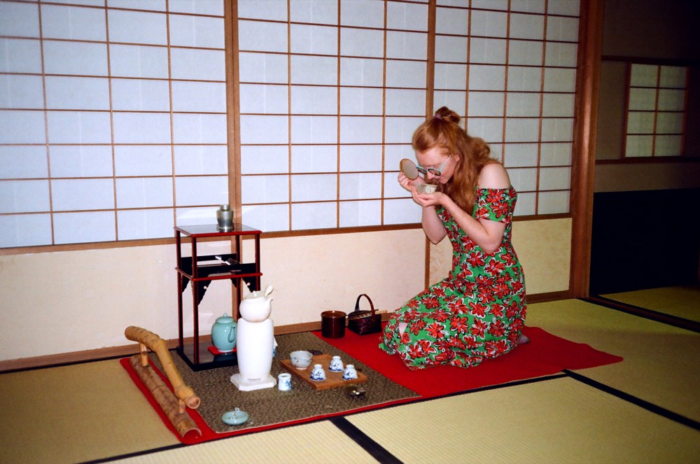
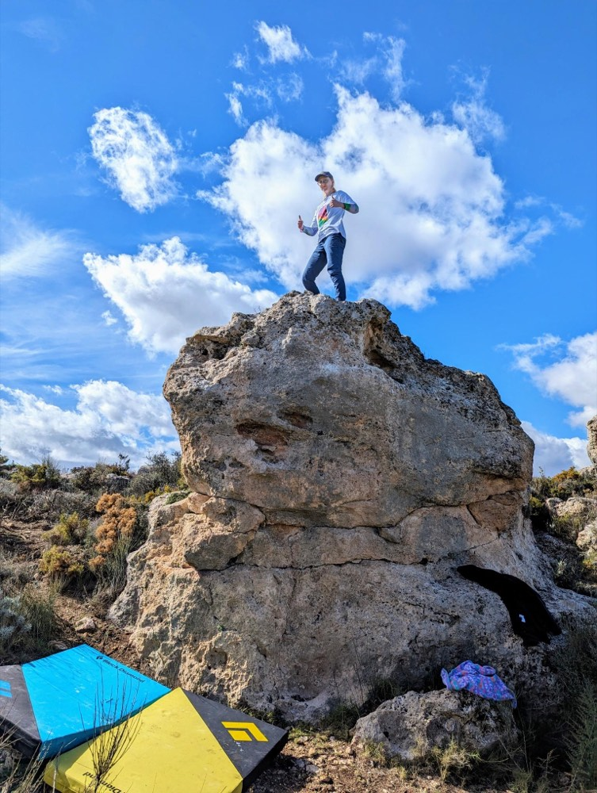
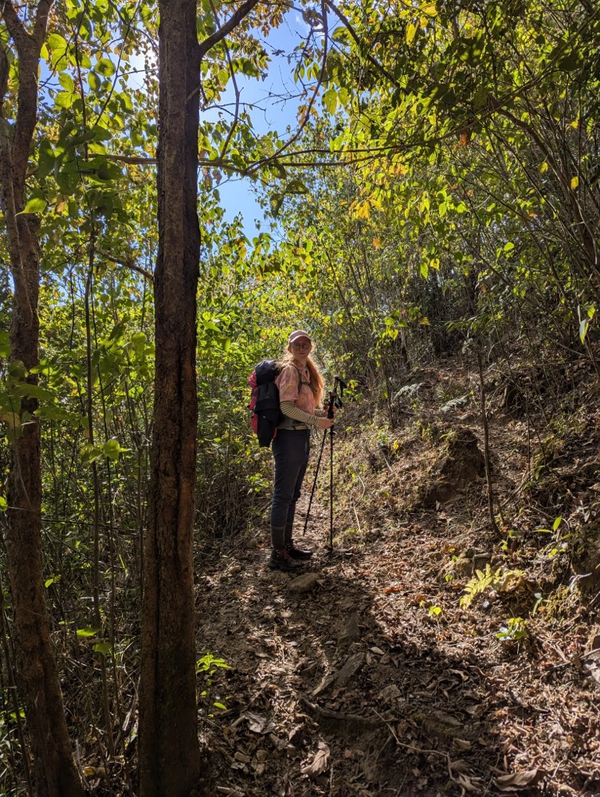
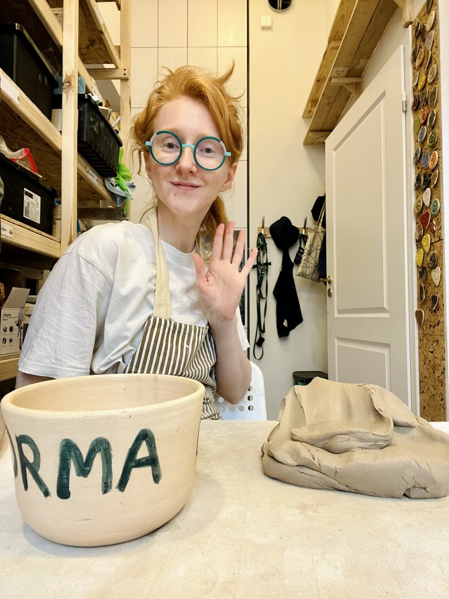
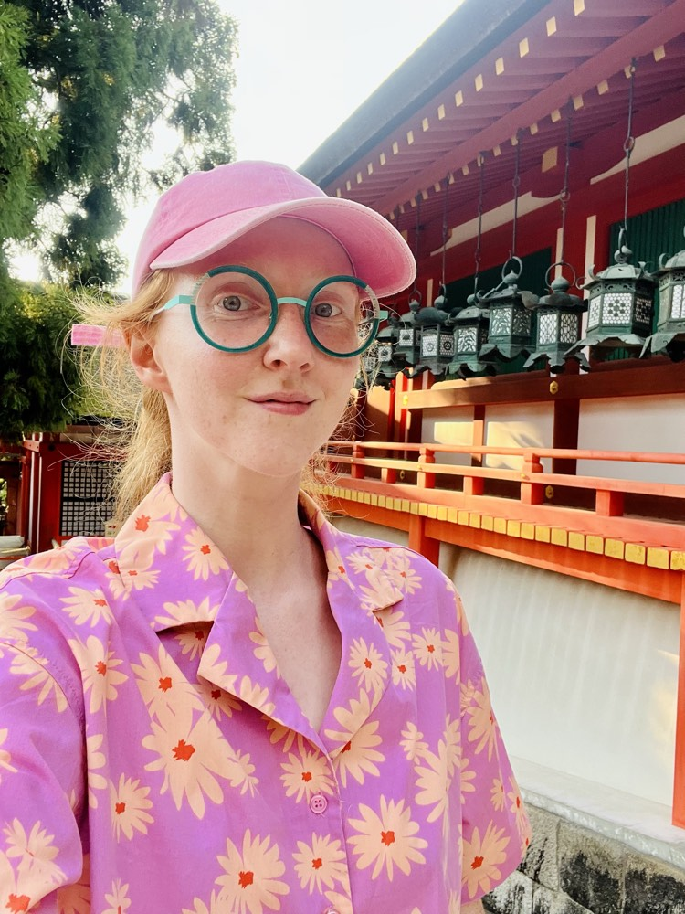

About me
I build research cultures from scratch — and then design inside them.
Senior Product Designer, 8 years in — with a soft spot for research that's messier than it looks from the outside.

Katarzyna Moszczyńska Senior Product Designer
I think of myself as a connector — translating Data Science models into intuitive flows, reconciling a Product Owner's vision with engineering constraints, and mentoring the designers around me.
I'm a Senior Product Designer with 8 years of experience designing complex, data-intensive products for global teams. For the past two years I've owned design and research direction on my team — the sole point of contact with our VP of Design in regular 1:1s, running design reviews, and unblocking the hard calls.
Research is where I do my best work. I run studies with users on nearly every continent — Europe, Asia, the Americas, Australia — and I built my team's entire research culture from the ground up. When I joined, the sole designer on the team had never conducted a single study. Today, every initiative starts with research, Product Owners run their own discovery interviews, and the Data Science team tracks product usage as a habit, not an afterthought. I also started my org's shift toward a data-driven approach — including organizing a team outing to a conference on data-driven product development.
I work daily with AI tools (Figma Make, Lovable, Claude) as a thinking partner — building small research agents to pressure-test ideas and speed up synthesis. I always start from my own sketches, and the final call always stays mine.
Wherever I land, I bring a strong pull toward community-building. I love cooking for people and running office workshops — onigiri one week, spring rolls the next — teaching gong fu-style tea brewing, and hosting tea tastings with teas I've brought back from my travels through China, Laos, and Japan.
Experience
Aug 2021 — Present
Senior Product Designer / Design Lead — WPP Media
Informal design leadership for the past two years. Global research and design for a tool used by client teams across Europe, Asia, the Americas, and Australia. Initiated a company-wide shift toward product analytics and data-informed decision-making. Work daily with AI tools (Figma Make, Lovable, Claude) as part of my design process. Audited and redesigned a core campaign-planning screen — cutting full setup time in half alongside engineering's performance work.
What I did, in detail
- Informal design leadership. For the past 2 years I've informally led design on my team — without a formal title, but as the sole point of contact with our VP of Design in regular 1:1s, and in exchange with a design lead from another part of the company. I run design weekly and review sessions, unblock designers on hard calls, and built a team culture of trust and open feedback.
- Global-scale design and research. Design for a tool used by client teams across Poland, the UK, Germany, Japan, Brazil, and Australia. I run user research across time zones and present work to global stakeholders and power users in English during sprint reviews.
- Data-driven decision culture. Initiated company-wide interest in product analytics — a conference outing and follow-up workshops made my team the only one in the org tracking product events in Google Analytics. When adoption of a new tool stayed low, I designed an experiment to isolate whether the cause was UX friction or organizational factors; the findings pointed to structural causes and redirected the team's next steps.
- AI-augmented design workflow. Figma Make, Lovable, and Claude daily — dedicated agents fed with research and methodology to pressure-test ideas and speed up analysis, always starting from my own sketches. Final calls stay mine.
- Audits and data-informed optimization. Audited and redesigned a campaign-planning application — analyzing page-load times with engineering cut full setup time in half.
- Support on an LLM-based product. Regular design review and unblocking for the designer building an internal tool where an AI chat turns campaign briefs into ready-made in-app parameters — in the loop, without taking her autonomy.
Oct 2018 — Jun 2023
UX/UI Designer — University of Warsaw
Full WCAG accessibility audit and redesign of the university's mobile app. Led a full project cycle — workshops, personas, iterative wireframe testing — for a data-analytics system used university-wide, followed by post-launch usability testing and a satisfaction survey with very positive results.
What I did, in detail
- WCAG audit and redesign. Full accessibility audit of the USOS mobile app and redesign of elements breaking core WCAG rules.
- University-wide data system. Full project cycle — workshops, personas, iterative wireframe testing, and after launch, extensive usability testing and a satisfaction survey with a very positive reception.
- Complex user flows. Instructor rating module, calendar, and per-course grade views for students.
Earlier
Co-founder & Product Designer — TAKŁADNIE Design Cooperative (2019–2026)
Co-founded a design cooperative — branding, website, and client branding projects.
Educator — Warsaw Center for Cultural Education (2017–2022)
Designed and led Design Thinking workshops for teenagers, from concept to their own small installations.
Junior Designer — Robert Pludra Design Studio (2016–2018)
First product design experience across physical products, including two weeks of ethnographic fieldwork.
Education
Academy of Fine Arts, Warsaw
BA, Product Design (2015–2019) · Grade 5.
Chair of the Student Council, Faculty of Design — energized the student community and grew engagement in faculty life, regularly recognized by faculty leadership. Also active in the university-wide Student Government of the Academy of Fine Arts.
Key skills
- UX / Product Design
- Human-Centered Design · Data-Informed Decisions · Global User Research · In-depth Interviews · Usability Testing · Surveys & A/B Testing · Business Discovery · UX Audits · Information Architecture · Design Systems · WCAG · SaaS Product Design
- AI-Augmented Design
- Claude · Claude Code · Figma Make · Lovable · Research Agents · Agent Creation
- Leadership & Process
- Informal Design Leadership · Cross-functional Collaboration · Mentoring · Workshop Facilitation · Team Culture Building · Design Thinking · Agile / Scrum
- Tools
- Figma · FigJam / Miro · Google Analytics · JIRA / Confluence · Excel
- Languages
- English (B2) · Polish (native)
Let's work together
Open to new opportunities.
Send a note about the role or project you have in mind — email katarzynkamoszczynska@gmail.com or reach me on LinkedIn. I'm always up for a good problem — and I can't wait to hear what you're working on.
Off the clock
Five things I make time for.




